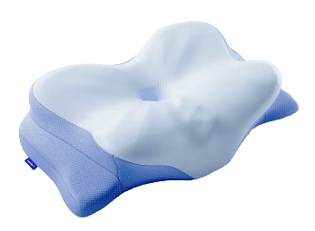
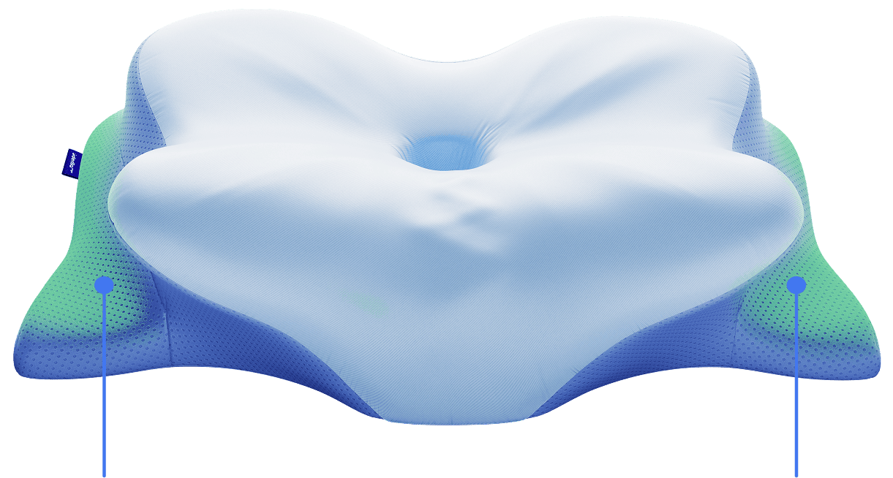

01 · DISTINCTIVE SHAPE
Butterfly-inspired contours
The sculpted profile offers defined areas for head placement, with curved edges that distinguish it from a flat pillow.
A sculpted, butterfly-inspired shape. Pressure-responsive memory foam. A thoughtful design for anyone exploring a more supportive-feeling pillow.
See what makes this contoured pillow distinctive, then check the latest product options and pricing on the seller’s website.
Independent product guide · Affiliate links may earn us a commission · Not the official Derila store.

Traditional pillows often rely on loose filling and a familiar rectangular shape. Derila Ergo takes another route, using a molded memory foam profile with a distinct center and curved edges.
For shoppers who like the feel of a shaped pillow, that difference is worth exploring. The best fit still comes down to your preferred sleeping position, pillow height and personal comfort.
See the comfort details ↓A closer look at the shape and materials — without exaggerated promises.
The sculpted profile offers defined areas for head placement, with curved edges that distinguish it from a flat pillow.
Memory foam gently responds to pressure and returns toward its original shape, rather than needing to be fluffed.
The contoured design is an option to consider if you enjoy a more structured pillow profile. Fit and comfort are personal.

Notice the central depression and gently raised surrounding sections. Those physical details are the main reason this pillow looks and feels different from conventional rectangular designs.
Real product imagery extracted from the supplied PDF. Original proportions preserved.
See Available Options →If you are considering switching from a conventional pillow, the Derila Ergo's molded foam and contoured profile give you a distinct style to compare.
Like any pillow, personal comfort can vary, and adjusting to a new shape may take time.
Check Current Price →Here's the simple overview before you visit the seller to review the latest offer.
Contoured, butterfly-inspired ergonomic pillow.
Memory foam, according to the supplied seller information.
Prices, bundle options, shipping and returns are determined by the seller and should be checked before purchase.
Explore the seller’s current product options, available bundles and total price before deciding what works for you.
Check Current Price & Options →You will visit the independent seller’s website. Prices, shipping and return terms are set by the seller.
Its butterfly-inspired molded shape and memory foam material distinguish it from many conventional rectangular pillows.
People have different preferences for pillow height, firmness and shape. Compare the design with how you usually sleep and review the seller's specifications.
It can. A molded contour feels different from a traditional pillow, and individual comfort varies.
This page makes no medical treatment claims. A pillow is not a substitute for medical assessment or treatment.
Use any “Check Price & Options” button on this page to visit the seller’s website for current pricing, shipping and return information.
The Dorale is an independent informational website, not the manufacturer or official Derila store. We may earn a commission from purchases made through approved affiliate links, at no extra cost to you. Product photographs come from seller reference material; image reuse authorization must be confirmed before publication. Comfort experiences vary. No medical outcomes are promised. The seller controls final prices, shipping, checkout and return terms.